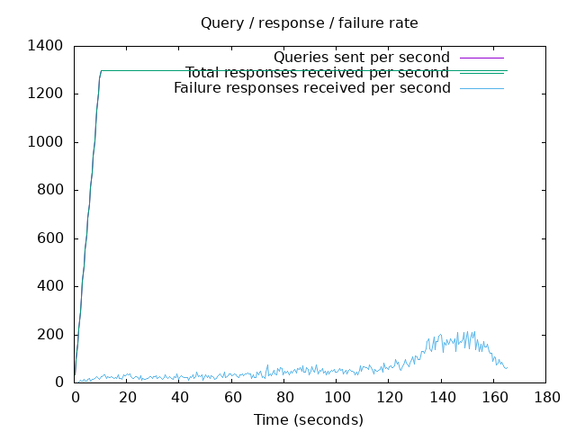
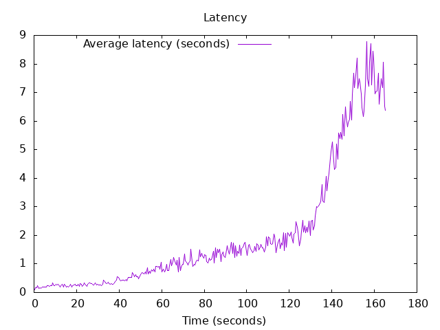

DNS Resolution Performance Testing Tool Version 2.14.0 [Status] Command line: resperf -P 20250620-0950.gnuplot -M doh -s 79.127.218.224 -O doh-uri=https://protective.joindns4.eu/dns-query -d domains_shuffled.list -C 50 -m 1300 -b 1400 -q 10000 -R -r 10 -c 600 -t 30 -F 0 [Status] Sending [Status] Ramp-up done, sending constant traffic [Status] Reached 10000 outstanding queries [Status] Waiting for more responses [Status] Testing complete Statistics: Queries sent: 208849 Queries completed: 208849 Queries lost: 0 Response codes: NOERROR 135965 (65.10%), SERVFAIL 10183 (4.88%), NXDOMAIN 62701 (30.02%) Run time (s): 183.941864 Maximum throughput: 1300.000000 qps Lost at that point: 0.00% Connection attempts: 50 (50 successful, 100.00%) DNS-over-HTTPS statistics: HTTP/2 return codes: 200: 208849
 